Major · 3/4
Poor navigation & system feedback
Refund task times split evenly — two participants finished under two minutes, two took longer — largely due to the number of screens before submission and a lack of confirmation feedback.
01 — Overview
Quick Cart is a mobile e-commerce marketplace connecting buyers with verified sellers — designed to make discovery, purchasing, and post-purchase actions simpler, in the Nigerian market context.

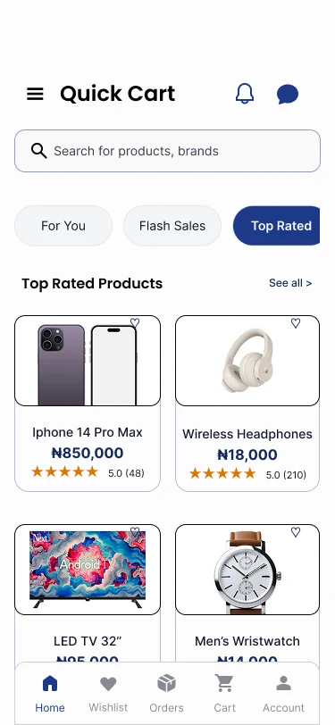
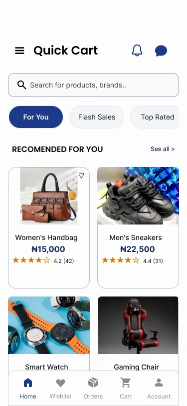
02 — Problem & hypothesis
Online shoppers struggle to quickly find the right products, identify trustworthy sellers, and complete actions like purchasing, requesting refunds, or reporting a seller without unnecessary friction.
"If clear navigation, accurate product information, and a simplified checkout reduce friction, users will complete shopping tasks more easily and with more confidence."
03 — Research & insights
Research combined user interviews, usability testing, and a competitive review against Jumia, Temu, and Facebook Marketplace.
Users found buying easy overall, but wanted more accurate search results and clearer product availability.
Refund and seller-report flows required too many screens, with little feedback confirming what had just happened.
Low visual prominence made a few key features hard to discover without prior knowledge of where they lived.
04 — User persona
Emmanuel Adekunle
Find products quickly, compare across sellers, and buy from people he can trust — without unnecessary steps.
Disorganized listings, inaccurate search results, hidden features, and a system that doesn't tell him what just happened.
"I want to find what I'm looking for quickly."
05 — Defining features
06 — Prioritization
07 — Information architecture
MAIN NAVIGATION
GLOBAL ACTIONS
08 — User flows
09 — Wireframes
Low-fidelity screens established hierarchy, navigation, and the placement of important actions before any visual design began.
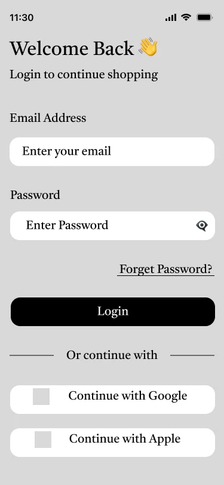
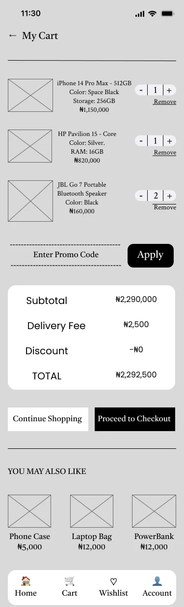
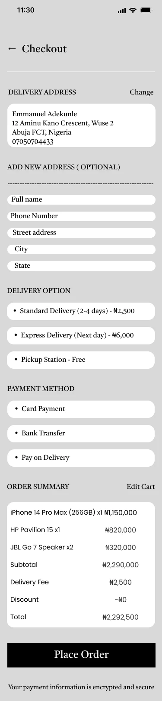
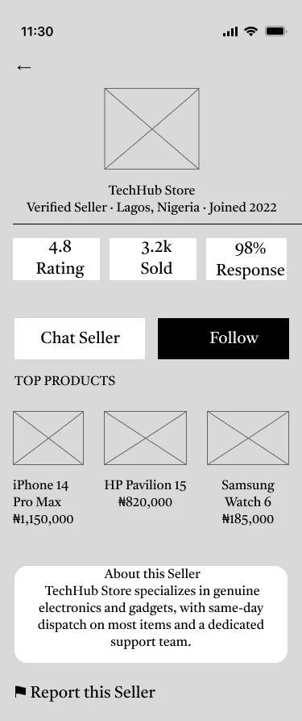
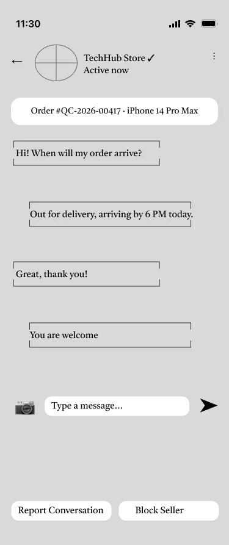
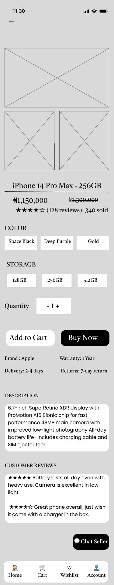
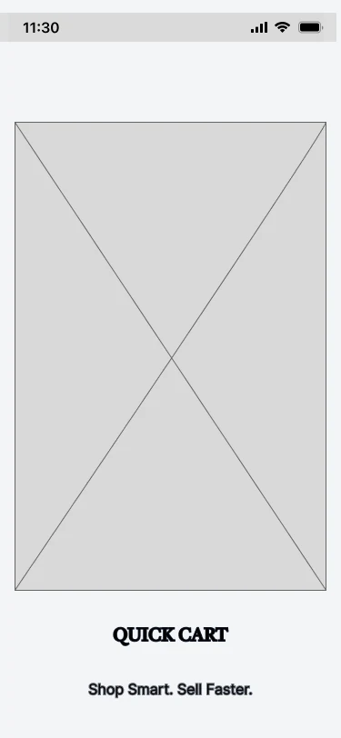
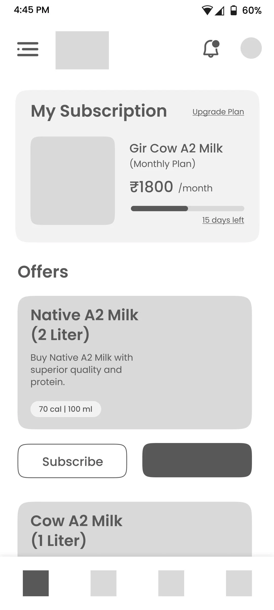
10 — High-fidelity design
Final screens focused on discoverability, consistent navigation, and reducing friction during the tasks that mattered most.
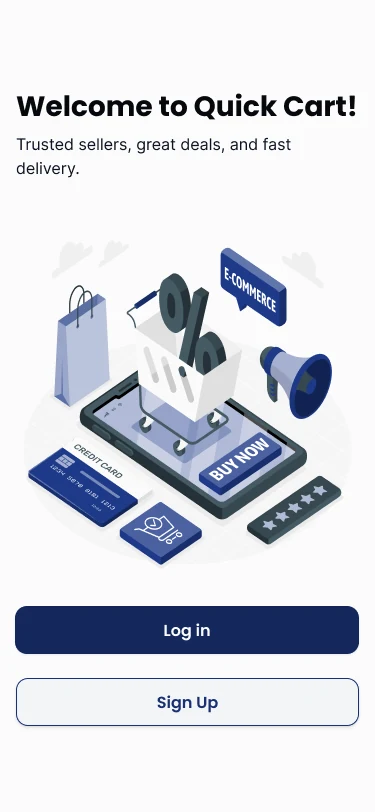
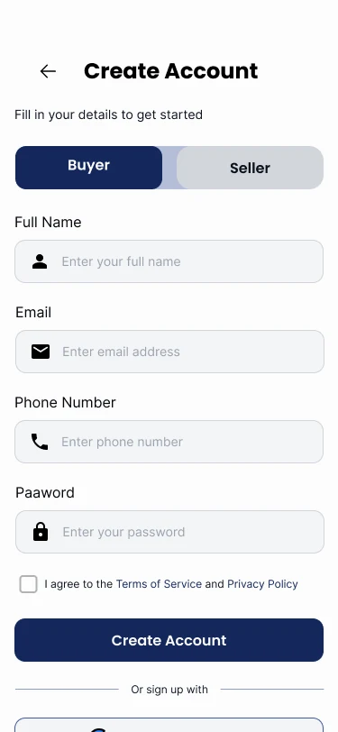
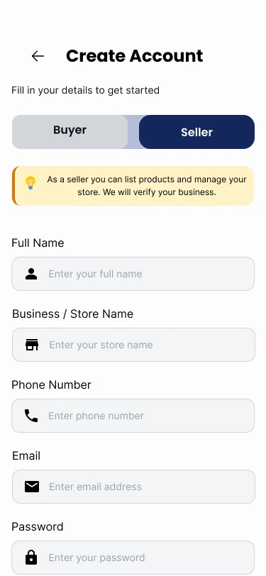
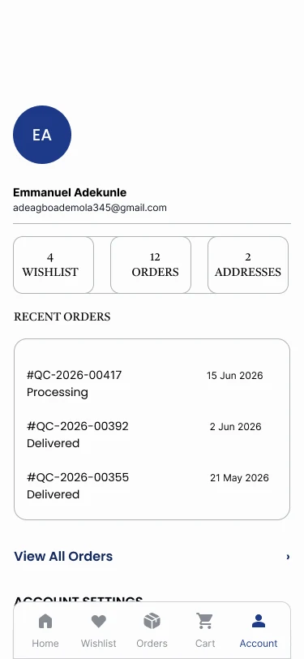
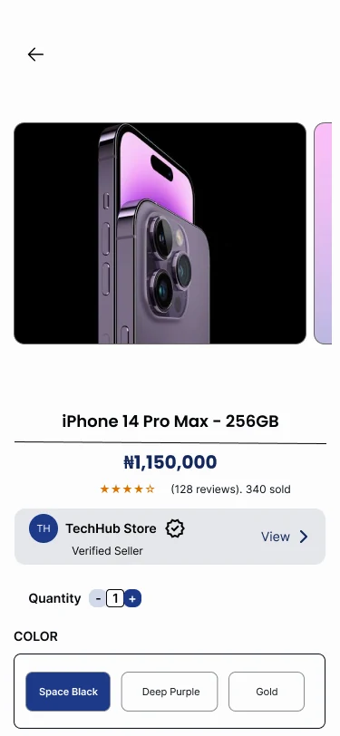
11 — Design system
Poppins for headings, Inter for body — paired with a palette built for trust and legibility across a buyer-and-seller product.
Contrast-audited against WCAG AA: dark text (#111827) is required over both Amber and Cyan fills — white text fails on either.
12 — Prototype & handoff
13 — Usability testing
4
participants tested
3/4
completed the primary task
3–4
satisfaction rating out of 5
Key insight — the biggest usability problem wasn't completing the purchase. It was finding and understanding important secondary actions: refunds, reporting, and feature visibility.
14 — Findings & severity
Major · 3/4
Refund task times split evenly — two participants finished under two minutes, two took longer — largely due to the number of screens before submission and a lack of confirmation feedback.
Minor · 2/4
Users wanted more accurate results and clearer product availability labeling.
Minor · 2/4
Some features were technically present but not prominent enough to be found without guidance.
15 — Before & after
Before
Several screens were required before a user could locate and submit a refund request.
After
The refund action was made more visible and the flow was simplified, with clear confirmation on submission.
Before
Products weren't displayed as accurately or clearly as users expected.
After
Search-result presentation and organization were refined for faster product recognition.
Before
The cart displayed multiple unrelated products at once, creating a disconnect with the Product Details screen, which focused on a single item.
After
The cart was refined to focus on a single product — the iPhone 14 Pro Max — aligning it directly with Product Details for a clearer, more focused purchase decision.
Why: aligning Cart and Product Details around one product at a time removes ambiguity about what's actually being purchased.
16 — Outcome & impact
17 — Reflection & next steps
Full buyer-and-seller architecture, real usability testing with real participants, and iteration driven by actual findings rather than assumption.
Balancing two very different user roles in one navigation system, and keeping important actions visible without crowding the interface.
18 — Key takeaway
Good e-commerce UX isn't just about helping people buy. It's about helping them find, trust, manage, and resolve their purchases with confidence.
19 — Live prototype
Product discovery, purchasing, order management, refund requests, and seller reporting — all in one interactive flow.
https://www.figma.com/proto/iBIzM8Vue2NaJPzV8zOVnK/Quick-Cart?node-id=1788-1993&viewport=214%2C110%2C0.07&t=3aj4j63BtQmeVWJ9-1&scaling=scale-down&content-scaling=responsive&page-id=1788%3A1984